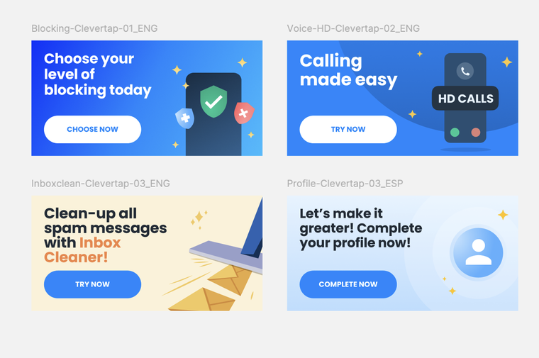
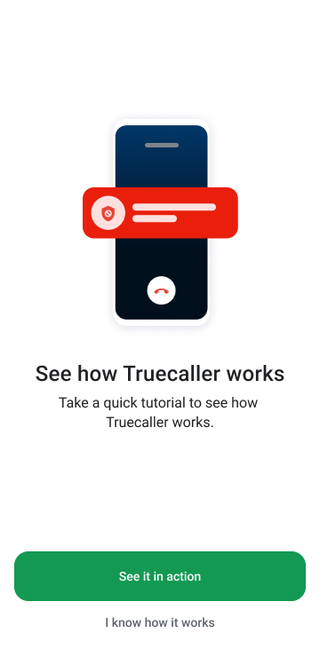
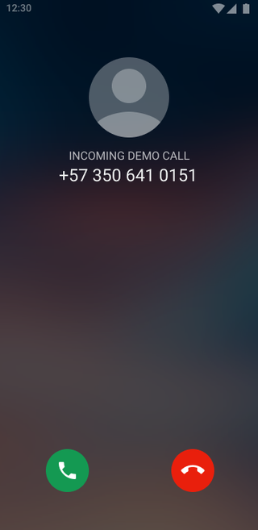
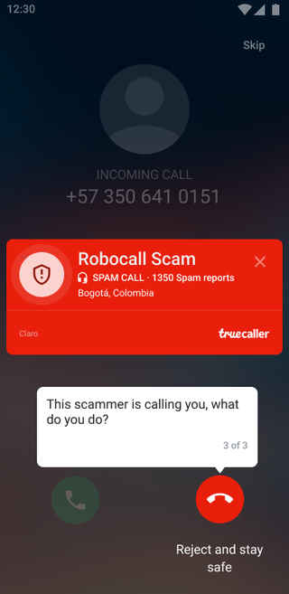

First-week retention, one experiment at a time
Bridging the activation gap, so a new registration becomes a week-one habit.
Role: Product Manager, onboarding · Platform: Android & iOS · Partners: CRM, Design, Data
The problem
Registered, then gone
Getting users through registration was only half the battle. Even after a successful signup, we saw a significant activation gap: many users registered and then quietly went inactive, never really experiencing what Truecaller does.
Why day 7
Day-7 retention is the leading indicator
Both industry benchmarks and our own data pointed to the same thing: if a user is still active seven days after onboarding, they tend to stick around for the long run. So we made Day-7 retention a core team KPI, and I built the first week as a deliberate journey rather than an afterthought.
The build · lifecycle
A 7-day engagement journey
I designed and launched an automated push-notification sequence across the first week, each message progressively introducing one core feature instead of dumping everything on day one: blocking, HD calls, inbox cleaner, profile completion, and more.

The build · education
Tutorials that make the value click
Notifications get users back; the product has to earn the stay. I integrated bite-sized, interactive tutorials that trigger right after registration, walking users through how caller ID and spam protection actually work, with their protection settings, on a safe demo call.



The build · localization
Built for each market
Trust is local. I adapted the language and imagery of both the journey and the tutorials for focus markets, from Spanish push copy to demo calls that use local numbers and spam patterns, so the first week feels native rather than translated.
The result
A journey that outlives the signup button
- +15 percentage points cumulative improvement in Day-7 retention, compounded over three years of iteration.
- Established a lasting framework where the user journey continues well past registration, instead of ending at signup.
- Turned first-week retention from a one-off push into a system the team keeps testing and improving.